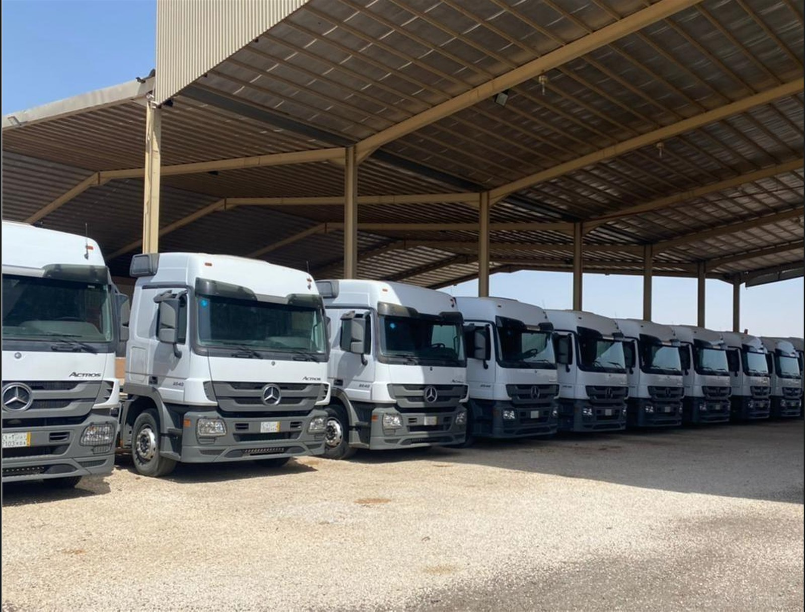

المعدات والتقنية
أسطولٌ بقدرات المشروع
نمتلك ونشغّل ونصون أسطولًا متنوعًا لخدمة التعدين والمحاجر والأعمال الترابية والنقل والمعالجة.
أسطولنا
معدات متكاملة للعمل اليومي في المواقع
تجمع MMC معدات التحميل والنقل والجر والتسوية والحفر والمعالجة ضمن منظومة تشغيل واحدة. تُختار التشكيلة بحسب المادة ومسافة النقل والإنتاج المطلوب.
معدات التحميل
تحميل الخام والركام ونواتج الحفر بأمان وكفاءة إلى القلابات أو أنظمة النقل والمعالجة.

حفارات هيدروليكية
59 وحدةVolvo · Hitachi · Komatsu
معدات النقل
نقل كميات كبيرة من الخام والركام والمواد داخل المواقع وعلى الطرق بين نقاط الإنتاج والتسليم.

Komatsu 465
نقل خارج الطرق
CAT 777
نقل خارج الطرق
CAT 775
نقل خارج الطرق
CAT 770
53 قلابًا
شاحنات ميدانية
دعم المواقع
Mercedes Actros
270 شاحنة
الجر والتسوية
دفع المواد وتشكيل المسارات وضبط المناسيب وتجهيز طرق النقل والمنصات التشغيلية.

بلدوزرات مجنزرة
64 وحدةCAT D9R / D10R / D11R
قريدرات
17 وحدةCAT 12G / 14G
معدات الحفر
منظومات متعددة للحفر الاستكشافي وحفر التكوينات الصخرية وأخذ العينات وفق متطلبات المشروع.

حفر استكشافي
PQ / HQ / NQCore · RC · Air Core
حفر سطحي
حسب التكوينAir & Mud Rotary
التكسير والغربلة
تقليل حجم الصخور وتصنيف المواد إلى تدرجات مناسبة للاستخدام أو التوريد، وربط مراحل الإنتاج بالسيور.

محطات تكسير
أولي وثانوي
معدات غربلة
تصنيف المواد
الجاهزية التشغيلية
أكثر من مجرد معدة
تشكيل الأسطول
مواءمة أحجام معدات التحميل والنقل مع الإنتاج المطلوب.
الصيانة الوقائية
فحوصات دورية تقلل الأعطال وتحافظ على سلامة التشغيل.
الإسناد الميداني
فرق تشغيل وفنيون يتابعون الأداء في موقع المشروع.